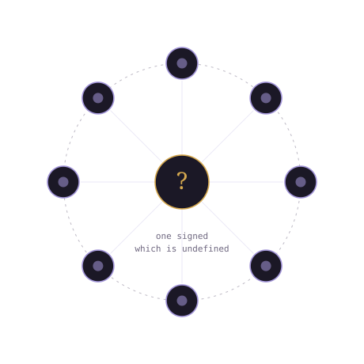
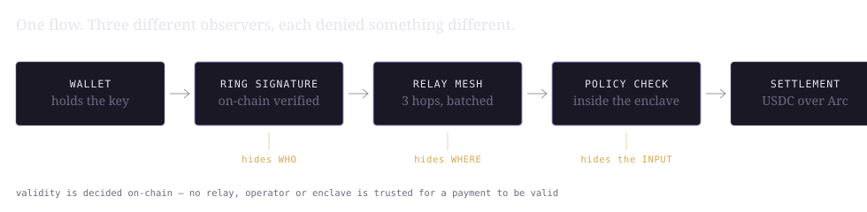
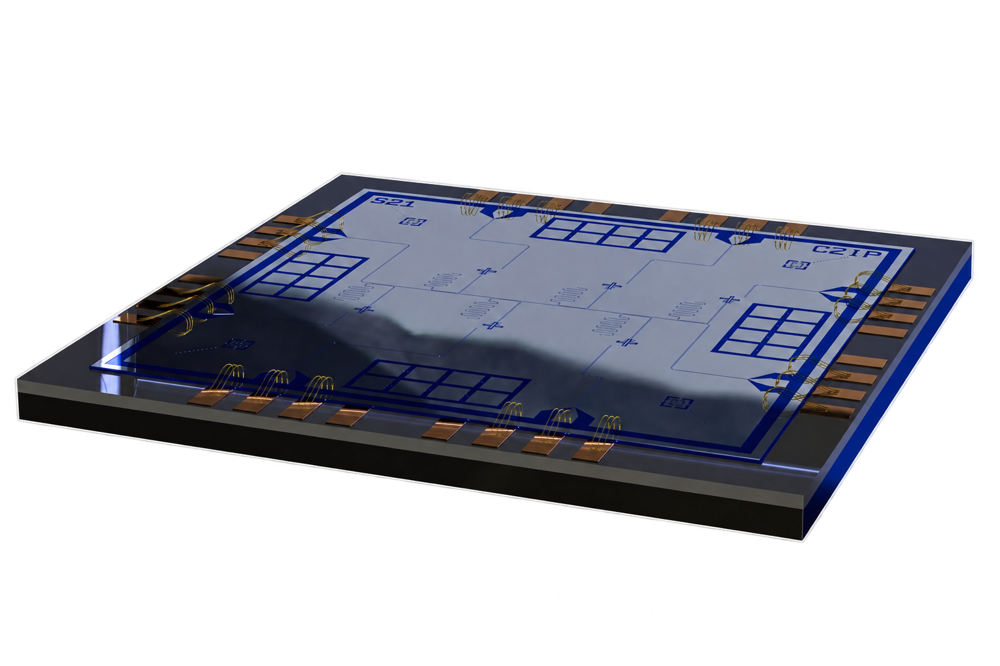
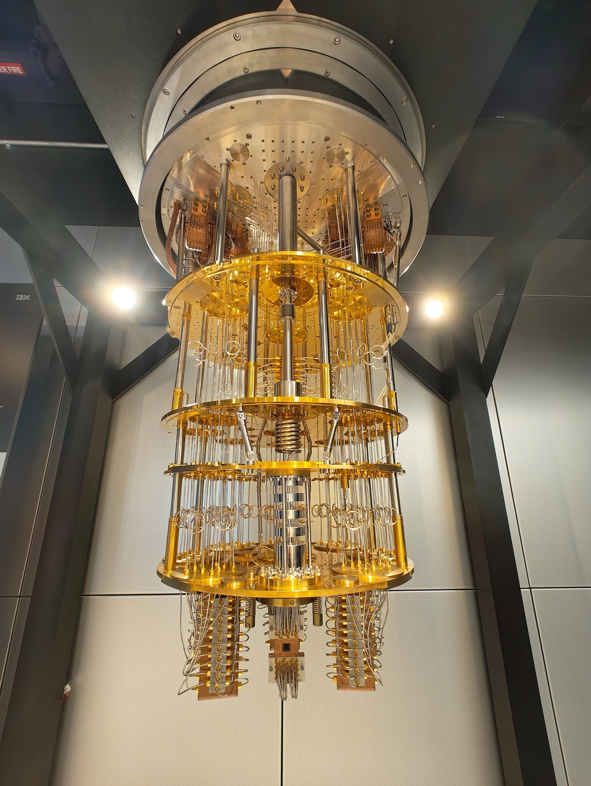

Post-quantum · network-level · settlement
A ring signature hides which of eight signed. A relay mesh hides where it came from. Neither of them breaks under Shor.
Every private payment tool on Ethereum today hides what happened. None of them hide who connected to make it happen — and every one is signed with cryptography a quantum computer is already known how to break.
ring size 8 · proof of concept · testnet


Quantum-secure
Every payment is authorised by a post-quantum ring signature — the sender proves they are one of a small group without revealing which one, on the same class of hard problem NIST standardised against quantum attack. There is no “upgrade later”, because it was never breakable that way.
Network-level
Encrypting a transaction still leaves an IP address behind. Every payment is routed through a relay mesh — three hops, batched, randomly delayed — so the moment your wallet connects is never linkable to the moment your transaction lands.
Settlement
The signature is verified entirely on-chain — no relay, operator or enclave anyone has to trust for a payment to be valid. Funds settle in USDC over Arc, built for exactly this kind of conditional, multi-step flow.
What survives a quantum computer
Shor breaks discrete-log outright; Grover halves hash strength, which 256-bit output already absorbs. Every shielded-payment protocol in production today sits in the top two rows.
Railgun, Aztec, Privacy Pools hide the payment — sender, amount, recipient — with elliptic-curve cryptography a quantum computer breaks. None of them touch network-origin privacy.
Monero is the closest existing shape — ring signatures plus network-layer obfuscation — but with pre-quantum cryptography, on a chain with no smart contracts.
Flashbots and private RPC hide a transaction from the public mempool, not from the RPC provider. A different problem, and the one most often mistaken for this one.
Nobody surveyed composes quantum-secure payment privacy with network-origin privacy, on Ethereum. That composition is the claim — not any single piece of it.

Threat model
What it hides
What it does not claim
What you trust
Nothing, for payment validity — the ring signature is verified on-chain by the contract itself. The relay mesh is trusted only for network-origin privacy, and never for whether a payment is valid.

Built on what's real
ChipmunkRing (2025)
A published lattice-based ring signature with working reference code. Not a hackathon invention.
MatRiCT / MatRiCT+
Post-quantum ring-confidential-transaction design, already running in production on Hcash.
Ethereum's own roadmap
Privacy and quantum-resistance are both live Ethereum Foundation workstreams. This maps onto both.
chaff is already there.
Photography — IBM Quantum System One and Wire Bonded Superconducting Quantum Chip by OJB Quantum, CC BY 4.0; IBM Q System One installation by IBM Research, CC BY 2.0. Diagrams are original work. chaff is not affiliated with IBM.
{kind=link}
{kind=link}
_installation.jpg){kind=link}